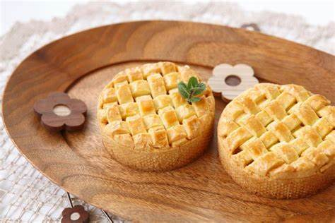

The charred, crispy crust is served with a hot filling, and every time you eat it, your happiness rises and your guilt rises.
Here is a picture of it:
图片仅供参考
photo credict:baidu
common manufacture method include:
If you want authentic pineapple pie, you can buy them in Hong Kong